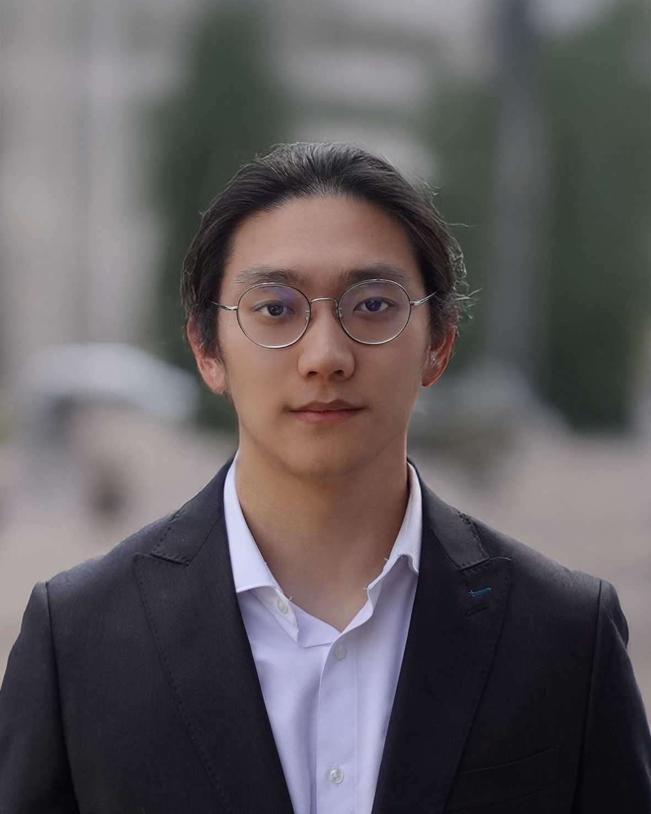
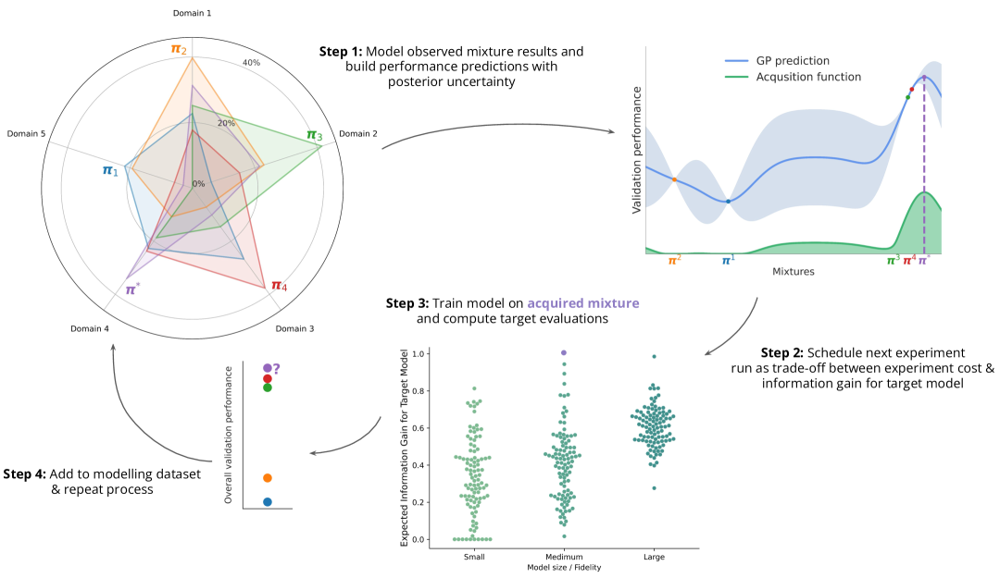
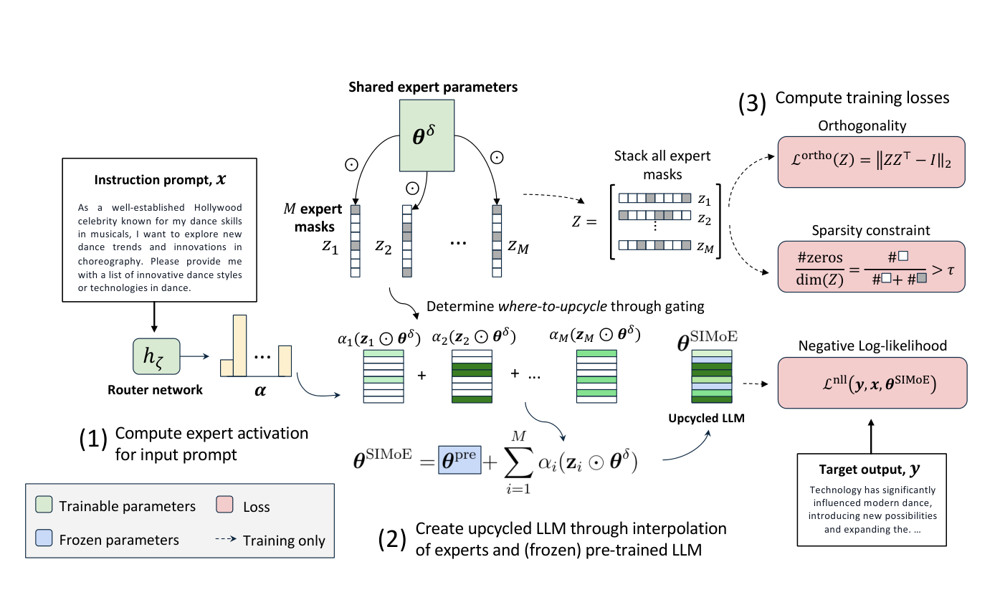
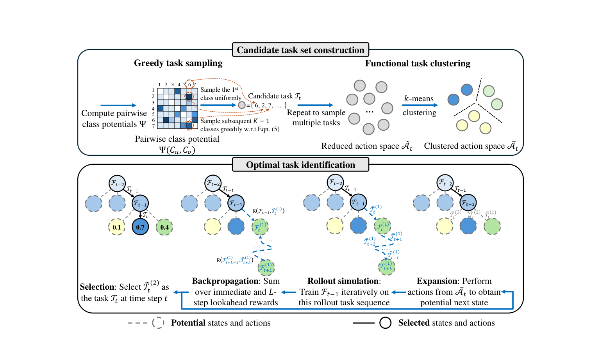
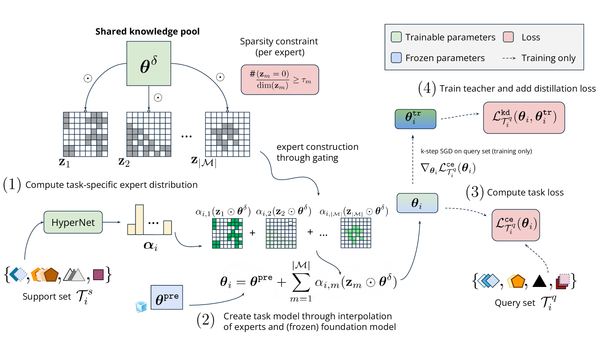
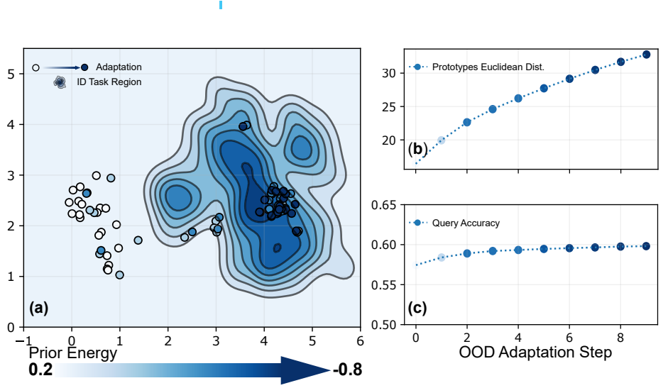

I am a third-year PhD student at Imperial College London, supervised by Prof. Ying Wei, Prof. Jonathan Richard Schwarz, and Prof. Alessandra Russo. Previously, I was a visiting student at Harvard University and a research scientist intern at Thomson Reuters Foundational Research, where I worked on LLM post-training. I graduated from Imperial College London with an MEng in Electrical and Electronic Engineering with first-class honours.
My research focuses on machine learning generalization in dynamic, real-world scenarios. Through meta-learning, sparsity techniques, and data-centric approaches, I address the challenge of adapting foundation models to out-of-distribution downstream tasks, with the goal of improving data efficiency, generalization capability, and scalability. I have published multiple first-author papers at leading machine learning conferences including ICML, NeurIPS, ICLR, and ACL, and have won several awards for academic excellence.
If you are interested in my work or would like to collaborate, feel free to reach out! 😊




